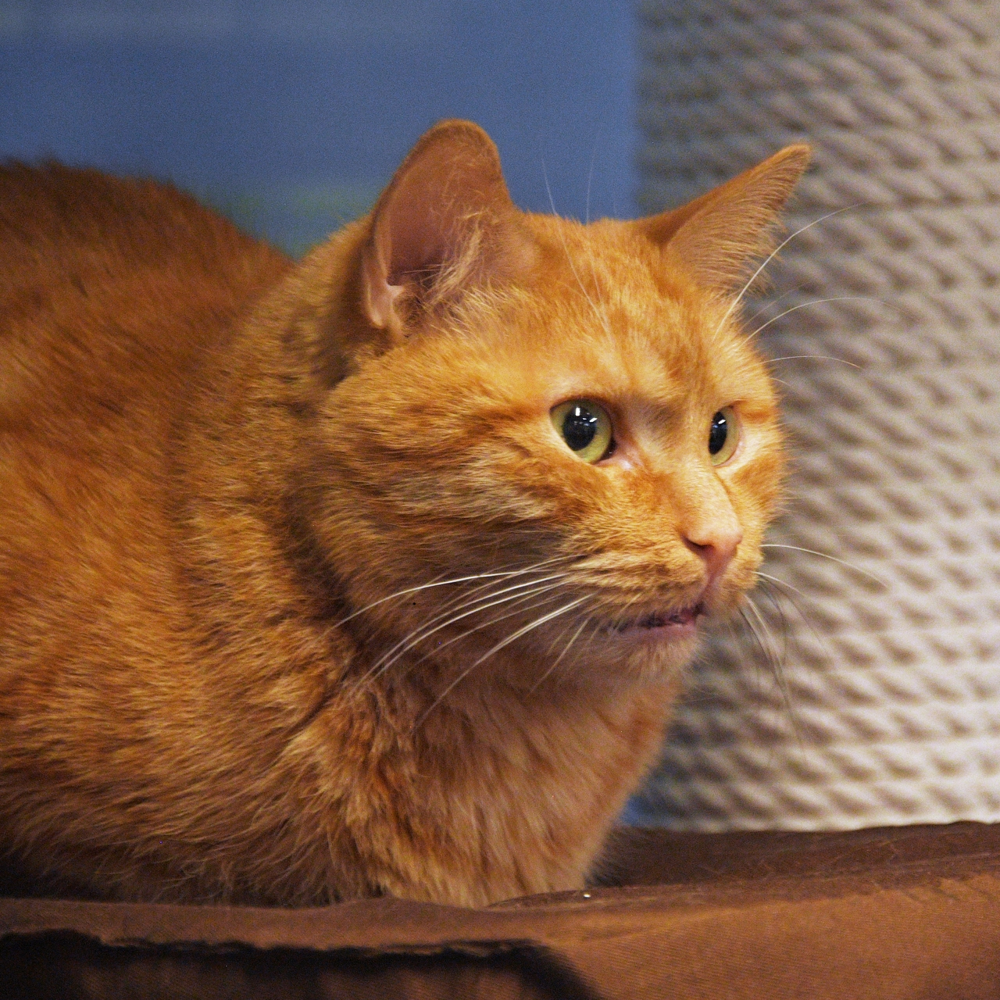

Кіт сві́йський, або кі́шка сві́йська (Felis silvestris catus) — невеликий ссавець ряду хижих родини котових. Сучасна назва походить від латинської назви catus, що використовується для свійського кота, на відміну від дикого, який латиною називається felis.
Кіт перебуває в тісному співіснуванні з людиною понад 9500 років та є найпоширенішою хатньою твариною. Поширений у всіх районах земної кулі. Україна за даними 2006 року входила в 10 країн з найбільшою кількістю населення котів, ставши домом для 7 350 000 домашніх котів, але втратила цей статус. Загалом у світі нараховується близько 600 млн (2015 рік) свійських котів. Налічується кількадесят порід кота свійського.
Коти приблизно одного розміру з іншими малими кішками, вони мають струнке тіло, гострі зуби, чудовий зір та нюх, добре пристосовані для полювання на менших тварин. Однак коти, у порівнянні з дикими родичами, втратили смак до цукру, а певні популяції проявляють спадкову глухоту. Хоча коти полюють поодинці, вони є соціальними тваринами, що використовують численні засоби комунікації, у тому числі вокалізацію, феромони, мову тіла.
Американські короткошерсті кішки — тварини середнього й великого розмірів, сильні, міцні. Тіло масивне, має розтягнутий формат, важкий кістяк, добре розвинену мускулатуру. Його довжина дорівнює відстані від грудини до найбільш опуклої точки сідниць. Груди широкі. Спина широка, міцна, трохи скошена в місці основи хвоста. Кінцівки середньої довжини, сильні, з міцними м'язами. Лапи округлі, великі, стиснуті в грудку. Хвіст довгий, товстий, дорівнює за довжиною відстані від холки до його основи, без заломів. Кінець хвоста тупий, заокруглений. Коти набагато більші, масивніші, ніж кішки.
Голова велика, видовженої форми (більша завдовжки, ніж завширшки). Щоки повні, особливо в самців. Чоло трохи скошене, без опуклості між вухами. Морда міцна, квадратна, з довгими щелепами й твердим підборіддям. Ніс середньої довжини, з невеликим ухилом у місці з'єднання з чолом. Вуха середнього розміру, не широкі біля основи, широко посаджені одне від одного, із заокругленими кінчиками. Очі великі, відкриті, виразні. Широко розставлені. Розташовані трохи навскіс відносно носа, так що зовнішній кут ока трохи вищий, ніж внутрішній. Колір очей різноманітний: зелений, золотавий, темно-помаранчевий, блакитний, різнобарвні. Шия товста, мускулиста, середнього розміру. Хутро коротке, густе. Рівномірно вкриває все тіло.
Порода з'явилася в результаті схрещування європейської короткошерстої кішки і сіамської з темно-коричневими мітками. Варто відзначити, що коричневий відтінок шерсті цієї породи міг з'явитися лише в тому разі, коли тварини вирощувалися в місцевості з холодним кліматом. В Європі це були гори Швейцарії. Тому ці кішки отримали спершу назву «кішки зі Швейцарських гір».
Дана порода кішок середнього розміру з м'язистoю статурою. Основна відмінність породи — це їх яскраве однотонне коричневе забарвлення. Шерсть гладка і блискуча. Кошенята і молоді кішки можуть мати мітки таббі, які з віком поступово зникають. У цих тварин голова невеликого розміру, подовженої форми, вуха великі, при цьому широкі і прямі. Очі мають мигдалеподібну форму і зелений колір. Кінчик носика і подушки лап — рожеві, вуса коричневого або мулового кольору.
Відзначають, що кішки цієї породи мають грайливий характер, вони є відданими тваринами, які швидко звикають до своїх господарів. Для них дуже важливими є людська увага і турбота. Полюбляють прогулянки, швидко звикають до поводка. При появі у домі іншої кішки, поводяться дружно.
Шерсть у егейської кішки напівдовга, без підшерстка, помірно жорстка і достатньо густа. Добре її захищає впродовж суворих зимових холодів і трішки линяє на літо. Забарвлення шерсті дво чи триколірне, але один з кольорів обов'язково повинен бути білим, без жовтуватого відтінку і покриває від 1/2 до 2/3 частини тіла. Інші кольори можуть бути чорні, червоні, блакитні, кремові, зі смужками або без них. Егейська кішка це порода середнього розміру, з міцним, мускулистим тілом, не схильна до накопичення надмірної ваги.
Тіло у неї видовжене, струнке, ступні середнього розміру, лапи заокруглені. Хвіст середньої довжини, прямий. Голова середнього розміру, широка, але не кругла. Вуха широко розташовані, заокруглені на кінчиках і покриті шерстю. Особливість цих кішок у тому, що їхні очі можуть бути тільки зеленого забарвлення.
Хоча егейська кішка тільки недавно виділилася в окрему породу, одомашнена вона вже була давно і добре пристосована до життя з людьми. Добре переносить життя в квартирі. Ці кішки розумні, активні та життєрадісні, люблять привертати увагу.
Корат — це ідеальна кішка для утримання у квартирі або в будинку без виходу назовні. За темпераментом корати спокійні й дружелюбні. Вони грайливі, активні, ласкаві. Корат досить егоїстичний, ревнивий, дуже прив'язаний до господарів і не може обходитися довго без їхнього товариства. Голос подає рідко, навіть у період «тічки». Любить спокійну обстановку й спокійних людей. Під яскравими променями сонця колір кората з його переливами нагадує колір лаванди. Утримання кішок в умовах зі зниженою температурою може викликати ріст і збільшення довжини й густоти шерсті. Кішки чутливі до холоду, тому схильні до простудних захворювань.
Кішки породи корат — це тварини середніх розмірів, міцні, стрункі, сильні. Тіло з добре розвиненою мускулатурою, досить міцне, кремезне, низько посаджене. Груди широкі. Спина й поперек мускулясті. Спина трохи опукла. Кінцівки середньої довжини, пропорційні стосовно тулуба. Передні кінцівки трохи коротші, ніж задні. Лапи маленькі, овальні. Хвіст середньої довжини, товстий біля основи, з округлим кінчиком. Коти міцніші, ніж кішки.
Голова серцеподібна, широка біля основи. Лоб широкий, майже плаский. Щоки й підборіддя добре розвинені. Перехід від чола до носа плавний. Ніс короткий, на ньому є ледь помітний перелом (стоп). Верхня половина ніздрів заокруглена. Очі великі, круглі, опуклі, широко розставлені, дуже блискучі, яскраво-зелені. Зелений колір очей набуває повної яскравості після досягнення кішкою віку 3-4 років. Погляд прямий і уважний. Вуха — великі, широкі біля основи, трохи заокруглені, високо сидять на голові, вкриті зовні короткою густою шерстю. Внутрішній бік вуха трохи шерстистий. Шия довга. Шерсть коротка, густа, шовковиста, як атлас, без підшерстя, тонка й гладка, прилягає до тіла. Дуже коротка й тонка на носі, задньому боці вух і лапах.